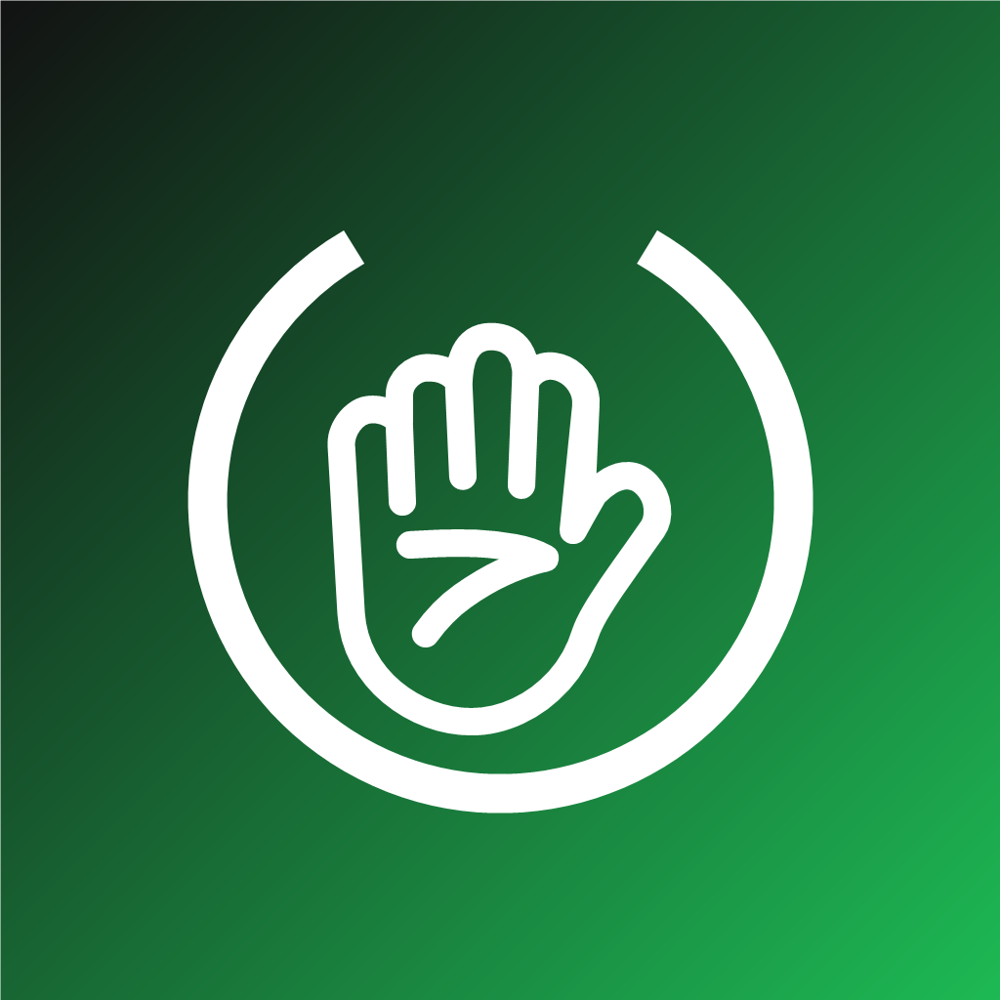

GestureDJ
Spotify per Handgesten steuern
- ☝️ Zeigefinger-Kreis: lauter / leiser
- ✋ Hand wischen: nächster / vorheriger Song
- ✋ Hand 1 Sek. halten: Play / Pause
1
Bei Justin freischalten lassen
Schick ihm die E-Mail-Adresse deines Spotify-Kontos. Ohne Freischaltung verbindet sich die App nicht.
2
SideStore installieren (einmalig, ca. 10 Min.)
Kostenloser App-Store, der GestureDJ alle 7 Tage selbst erneuert. Du brauchst einmal einen Windows-PC, ein USB-Kabel und deine Apple-ID.
Am iPhone:
- Im App Store „LocalDevVPN“ laden, öffnen, Connect tippen, VPN erlauben.
Am PC:
- iTunes von Apple installieren.
- iloader herunterladen und installieren.
- iPhone per Kabel anstecken, entsperren, „Vertrauen“ tippen.
- iloader öffnen → mit Apple-ID anmelden → iPhone auswählen → „Install SideStore (Stable)“.
Wieder am iPhone:
- Einstellungen → Allgemein → VPN und Geräteverwaltung → deine Apple-ID → Vertrauen.
- Einstellungen → Datenschutz & Sicherheit → Entwicklermodus an (iPhone startet neu).
- LocalDevVPN öffnen → Connect.
- SideStore öffnen und mit derselben Apple-ID anmelden.
- In SideStore unter My Apps auf „7 DAYS“ neben SideStore tippen.
Mac-Anleitung: docs.sidestore.io
3
GestureDJ hinzufügen
Erst wenn SideStore installiert ist (Schritt 2), sonst meldet Safari „Adresse ungültig“.
Sicherster Weg: Adresse kopieren, SideStore öffnen → Sources (Quellen) → + → einfügen → Hinzufügen.
https://raw.githubusercontent.com/g6c6tc6822-alt/gesturedj-source/main/apps.json
Oder direkt öffnen:
In SideStore öffnen In AltStore öffnenDann in der Quelle GestureDJ antippen → Installieren (bzw. „Free“/„Get“).
4
Erster Start
Kamera erlauben, kurz zu Spotify springen und bestätigen. Handy aufstellen, Hand 30–60 cm vor die Frontkamera.